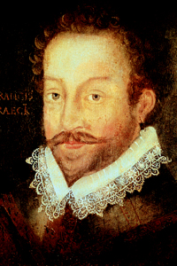

Lezione 10  Le Scoperte Geografiche
Le Scoperte Geografiche

-
160
430
-
160
280
-
225
250
-
160
100
-
160
210

DRAKE
Sir Francis Drake, qui ritratto da un pittore suo contemporaneo, si definiva un ufficiale della marina inglese, ma per gli spagnoli, suoi nemici per la vita, non fu altro che un pirata; fu il primo inglese a circumnavigare il globo e legò le sue fortune alla straordinaria personalità della regina Elisabetta I d’Inghilterra, che nel 1580 lo nominò cavaliere. Morì nel 1596 al largo delle coste panamensi, indossando la sua armatura.VERRAZZANO
1524: Giovanni da Verazzano esplora la costa atlantica del Canada e degli Stati Uniti, scopre la baia di New York. È alla ricerca del passaggio a Nord ovest per il Pacifico.CARTIER
Nel 1534 e nel 1541 il francese Jacques Cartier guida tre spedizioni in Canada alla ricerca del passaggio a Nord ovest per il Pacifico.DE FUCA
1592: il greco De Fuca cerca il passaggio dall’oceano Pacifico all’Atlantico. Scopre l’isola di Vancouver.HUDSON
Tra il il 1609 e il 1610 Henry Hudson va alla ricerca del passaggio a Nord Ovest, esplora parte dell'Artico, scopre quella che viene chiamata Baia di Hudson.